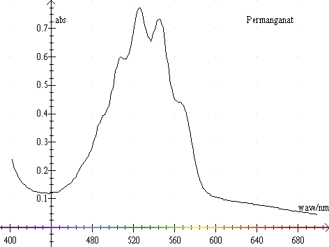
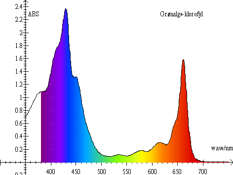

Denne graf viser absorbans i permanganat målt på Shimadzu.

Bemærk det indlagte farvespektrum på 1.aksen. Toppene ved 507,2 nm, 525,4 nm og 545,2 nm kan bruges til at teste spektrometrets bølgelængdekalibrering.

Her et eksempel hentet fra biologiundervisningen, det viser absorbans i grønalge + klorofyl.
Og nedenstående graf viser absorbans i figurmaling. Der er målt på en blå og en gul farve og på blandingen og blandingen var tydeligt grøn. Der er brugt de tilsvarende farver på grafen. Koncentrationen i blandingen er ændret i forhold til den gule og den røde opløsning.
Der er mange forskellige spektrofotometre, med hver sine fordele og ulemper. Det er som med en bil, der er altid et eller andet som burde være lavet på en anden måde. Læs beskrivelsen af hvert enkelt apparat, så finder du nok et apparat, som passer til dit behov.
Generelt kan man sige at